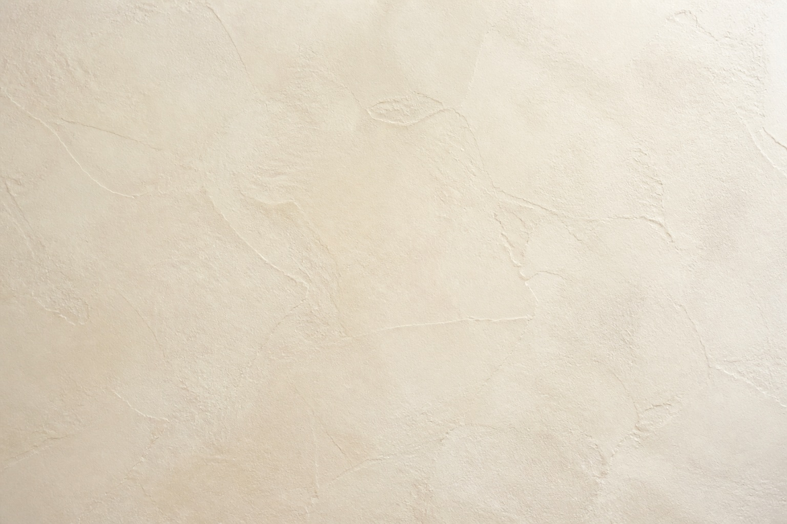

奢侈品 · 下一个十年
The next decade.
增长来自换人，
不是涨价。
过去十年，奢侈品价格涨了约六成；
而买它的人，正在换成下一代。（数据示意）
目录 · contents
三个正在发生的转变，重写奢侈品的增长逻辑。
第一章 · who is buying
01
换代
奢侈品的客户名单，
正在被一整代人重写。
客群 · who buys
50%
三十五岁以下的买家，
首次占到奢侈消费的一半。
十年前，这个数字还只是 24%。
换代不是趋势，是已经发生的事。（示意）
判断 · the call
提价是借来的增长——
它透支的，是
下一代人的好感。
当一半的买家已经换了人，
这笔旧账，迟早要还。（示意）
两种增长 · two engines
旧逻辑 · 提价
+60%
向上挤压老客户的钱包。
十年累计提价约六成——
空间已接近天花板。（示意）
新逻辑 · 换人
+1 代
向下赢得新一代的认同。
客群整体换手一代人——
这是增长唯一的新水源。（示意）
新钱 · the new money
新买家的画像，
和十年前几乎没有重合。
−1 轮
首购年龄
买第一件的人，年轻了整整一轮。（示意）
1/3
首次购买
三个买家里，就有一个是新客。（示意）
第二章 · what they value
02
重估
他们重新定义了，
什么东西配得上「贵」。
Understood
本质 · what luxury is
To be
understood.
奢侈的本质，正从「拥有」
转向「被理解」。
愿意为「懂我」多付钱的买家，
三年里翻了一倍。（示意）
“
抽言 · the shift
他们不再为 logo 付钱，
而是为「被看懂」付钱。
这句话，正在重写奢侈品牌的产品简报。（示意）
留存 · who stays
3×
真正留下来的客户，
复购是行业平均的三倍。
他们买的不再只是产品，
而是一次次被印证的判断。（示意）
重估清单 · what counts now
新一代愿意为之买单的，是旧 logo 给不了的三件事。
01
可被追溯的工艺
谁做的、怎么做的，比标牌更值钱。（示意）
02
可被相信的克制
不滥发、不打折，才撑得起稀缺。（示意）
03
可被讲述的故事
买的是一段叙事，不只是一件物。（示意）
二手 · the resale signal
二手市场的增速，
正在替奢侈品给出真实定价。
vs
第三章 · how luxury responds
03
重构
奢侈品要赢回未来，
得先重新学会说「不」。
Restraint
稀缺 · what scarcity means
Scarcity is
a judgment.
稀缺不是产量的上限，
而是判断力的下注。
敢于停产、限量的品牌，
毛利率高出同行十几个点。（示意）
定价权 · the real moat
克制，是唯一
不能被对手
复制的定价权。
产能可以买，渠道可以抄，
但「敢不卖」买不到。（示意）
百年三变 · a century of pricing
奢侈品的定价逻辑，
一百年里换过三次根基。
一句话 · on scarcity
「真正的稀缺，
从来不是产量，
而是敢不敢对需求说不。」
— 示意 · 行业访谈（illustrative）

护城河 · the last moat
慢，是这个时代
最后的护城河。
把交付周期做长的品牌，
反而换来了更高的复购。（示意）
下一个十年 · the move
把价格交给市场，
把判断交给时间。
换人比涨价慢得多——
但它是唯一不透支未来的增长。（示意）